AFOSR COE CODAC
Toward Compositional Agent-Based Modeling
Kris Brown
Topos Institute
CODAC Kickoff Meeting · Arlington, VA · September 2026

Overview
Four threads
1
A framework for agent-based models
2
Agent-based programs / workflows
3
Incremental search
4
CatColab
WITH
Nate Osgood

James Fairbanks
Evan Patterson
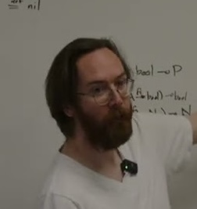
Michael Arntzenius
2
Core Abstraction: Rewrite Rules
Rewrite rules come up frequently in theories of discrete updates of combinatorial data.
Definition (Rewrite rule)
A rewrite rule in a category \(\mathsf{C}\) is a pair of morphisms \(L \leftarrowtail K \rightarrow R\).
- \(L\) is the pattern of the rule.
- \(R\) is the replacement.
- \(K\) relates the two.
The result of applying the rule is determined by the structure of \(\mathsf{C}\) (namely, its pushouts).
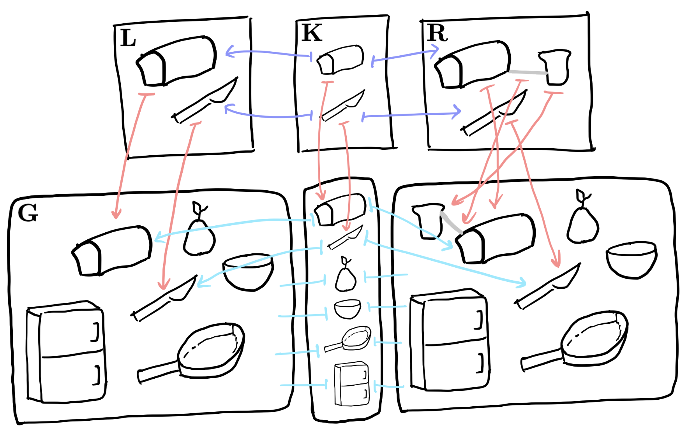
[1] A. Aguinaldo. Topos Institute Blog, 2022 · image
3
Agent-Based Models: Examples
Game of Life
COVID modeling
Discrete Lotka–Volterra
The only formal artifact of a model is usually its code, which makes models hard to compare, combine, edit and visualize.
4
Agent-Based Modeling (1/3)
An agent-based model simulates individuals which interact with their environments.
To develop a model–implementation distinction, we need to be more precise. An ABM requires a schema to structure its individuals and their environment.
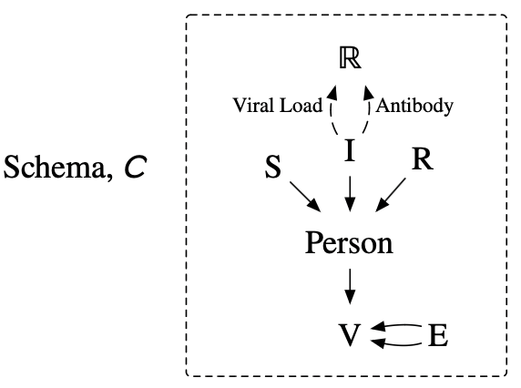
AlgebraicJulia implements a compositional theory of relational data.
- Schemas are categories, database instances are functors \(\mathsf{C} \to \mathsf{Set}\).
- Functors \(\mathsf{C}\to\mathsf{D}\) induce canonical migrations \([\mathsf{C},\mathsf{Set}]\to[\mathsf{D},\mathsf{Set}]\).
Caution: we do not impose a hard boundary between individual and environment.
5
Agent-Based Modeling (2/3)
The semantics of models are continuous time with discrete events and continuous dynamics.
To first order, an ABM is:
- A schema: possible world states are ACSet instances
- A collection of rewrite rules \(\rho_i\)
- An associated collection of timers \(T_i :: \mathsf{P}([0,\infty])\)
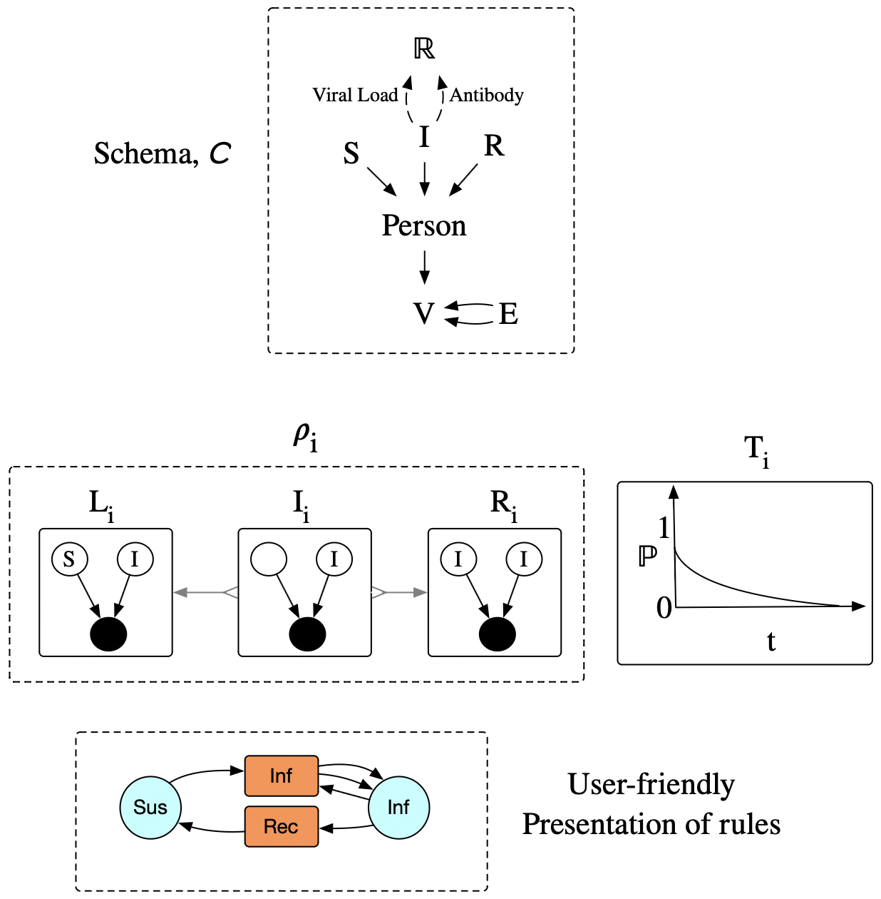
6
Scheduling Future Events with Timers
A timer's probability measure is a residence time: how long the event takes to happen, conditional on nothing else happening first to remove it from that state.
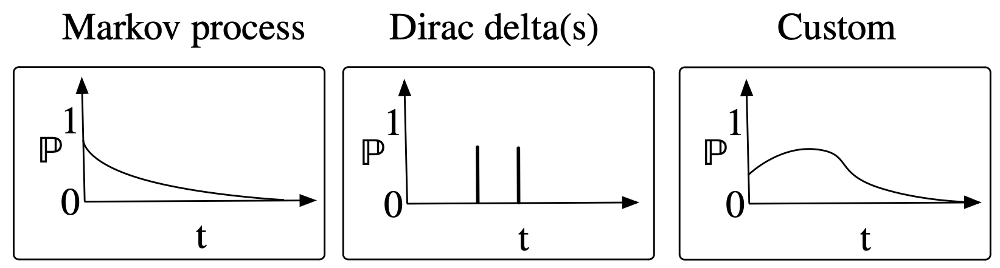
Example: an SIR event schedule
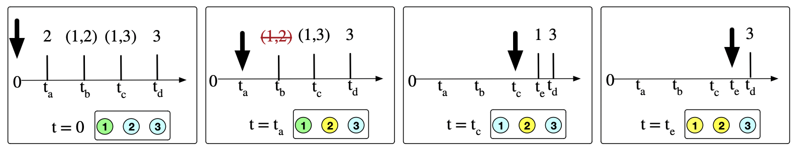
7
Agent-Based Modeling (3/3)
These models are continuous time with discrete events and continuous dynamics.
To first order, an ABM is:
- A schema: possible world states are ACSet instances
- A collection of rewrite rules
- An associated collection of timers \(T_i :: \mathsf{P}([0,\infty])\)
- A collection of continuous dynamics, given by ODEs \(O_j\)
- An associated collection of patterns \(P_j\)
- Partial functions from \(P_j\) variables to \(O_j\) variables
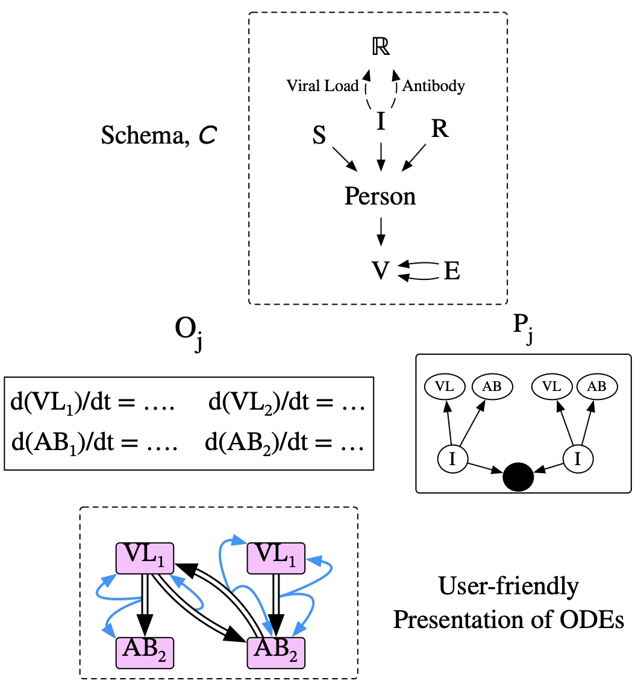
8
Rewrite-Based Workflows (1/4)
We're often interested in extended sequences of coordinated actions.
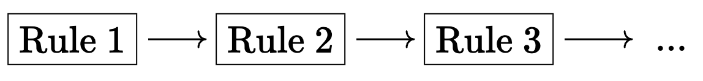
Problem: rules require matches, so the sequence above cannot specify how the rewrites relate to each other.
We address this by annotating the wires connecting boxes with interfaces.
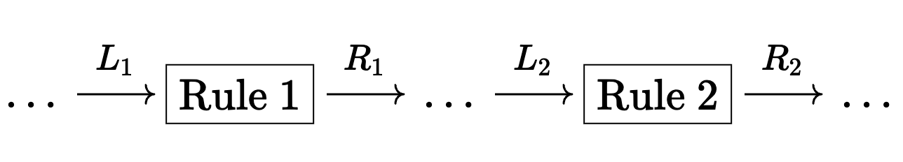
To run the workflow, flow along wires with a distinguished match for whatever pattern lives on the wire.
9
Rewrite-Based Workflows (2/4)
(Traced) symmetric monoidal categories are a desirable structure for one's syntax to have. Their diagrams:
Can be graphically depicted
Can have varying semantics
Can be composed in parallel or in series
Can be operadically substituted
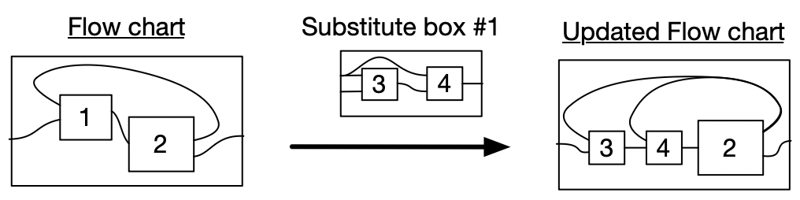
We represent workflows in a category closely related to \(\mathsf{Meal}\):
- Objects: sets. Morphisms: Mealy machines (stateful functions, updated when fed an input).
- \(\mathsf{Meal}\) is a traced SMC.
[2] K. Brown and D. I. Spivak. arXiv:2304.14950, 2023
10
Rewrite-Based Workflows (3/4)
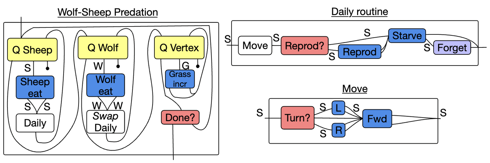
Running the workflow simulates wolves, sheep and grass.
11
Rewrite-Based Workflows (4/4)
Process-informed decision making
- Nondeterministic Mealy machines
- Each function has a multiset of outputs
Structured game representations
- Probabilistic Mealy machines
- Each function has a finitely-supported probability distribution of outputs
Applications
Modeling resilience in complex operations. Running a nondeterministic workflow lets us look at the resources which play essential roles in the successful executions of the workflow.
Agents which learn. Use the statefulness of boxes: any boxes which have some nondeterminism (e.g. picking a match) can be trained to produce a probability distribution when equipped with an objective function.
12
The Incremental Search Problem (1/2)
Example (Incrementalizing a conjunctive query that looks for pairs of consecutive edges).
Suppose we have a binary \(\mathsf{edge}\) relation, and let \(\mathsf{edge'}\) be the relation after an update. Let \(\phi' = \mathsf{edge'}(x,y) \wedge \mathsf{edge'}(y,z)\) be the query over the updated relation.
\[ \begin{aligned}
\phi' &= \mathsf{edge'}(x,y) \wedge \mathsf{edge'}(y,z) \\
&= (\mathsf{edge}(x,y) \vee \mathsf{\Delta edge}(x,y)) \wedge (\mathsf{edge}(y,z) \vee \mathsf{\Delta edge}(y,z)) \\
&= \phantom{{}\vee{}} {\color{IndianRed} (\phantom{\Delta}\mathsf{edge}(x,y) \wedge \phantom{\Delta}\mathsf{edge}(y,z))} \qquad \textcolor{gray}{\text{two old edges}} \\
&\phantom{{}={}} \vee {\color{RoyalBlue} (\phantom{\Delta}\mathsf{edge}(x,y) \wedge \mathsf{\Delta edge}(y,z))} \qquad \textcolor{gray}{\text{an old edge, then a new edge}} \\
&\phantom{{}={}} \vee {\color{RoyalBlue} (\mathsf{\Delta edge}(x,y) \wedge \phantom{\Delta}\mathsf{edge}(y,z))} \qquad \textcolor{gray}{\text{a new edge, then an old edge}} \\
&\phantom{{}={}} \vee {\color{RoyalBlue} (\mathsf{\Delta edge}(x,y) \wedge \mathsf{\Delta edge}(y,z))} \qquad \textcolor{gray}{\text{two new edges}} \\
&= {\color{IndianRed}\phi} \vee {\color{RoyalBlue}\Delta\phi}
\end{aligned} \]
13
The Incremental Search Problem (2/2)
Challenge: generalize this algorithm to be applicable in a wide variety of settings.
Solution
WIP paper with James Fairbanks, Michael Arntzenius and Max Willsey (UC Berkeley)
- Statically analyze rewrite rules to improve runtime efficiency
- Address incrementalization with respect to batches of updates
- Incrementalize conjunctive queries in any quasitopos with finite subobject lattices
Example in the category of simplicial complexes.
The algorithm is much more efficient when implemented natively in this category than when the data is embedded as a regular database and the algorithm run there.
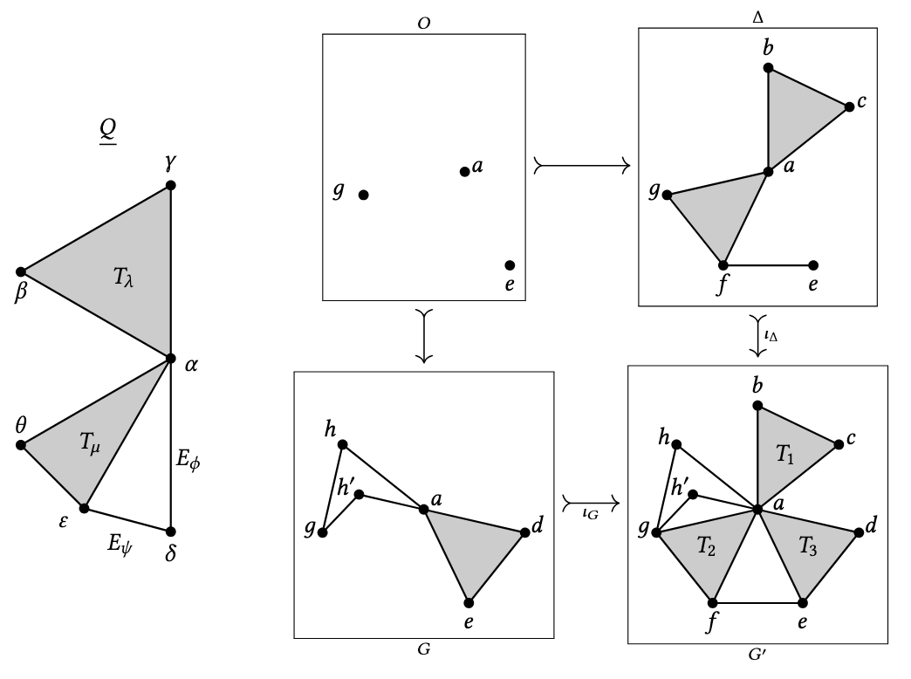
14
CatColab (1/3)
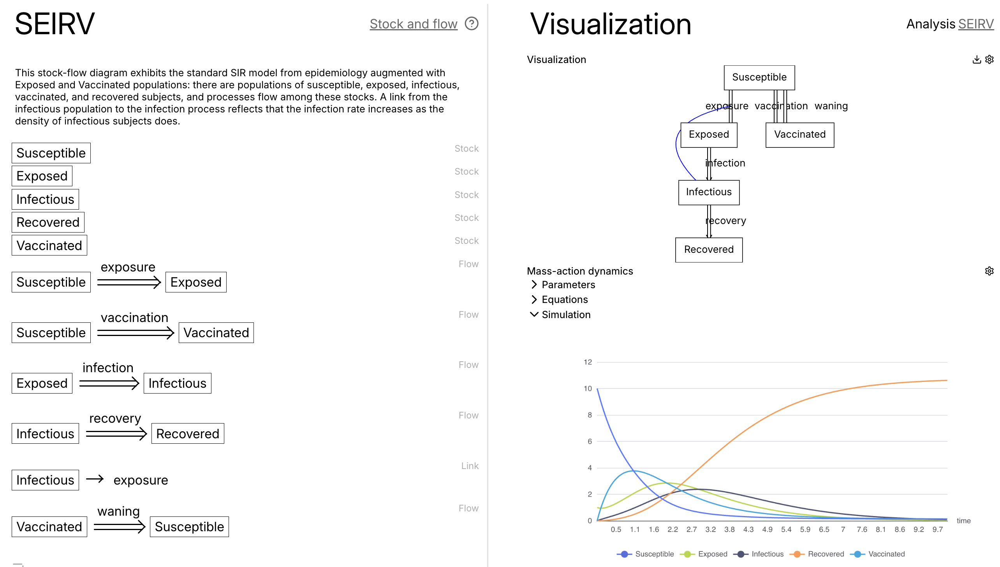
15
CatColab (2/3)
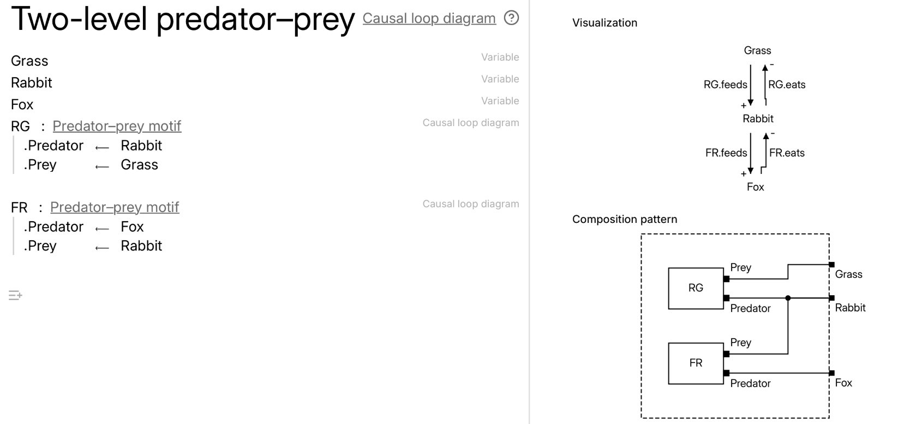
16
CatColab (3/3)
One could imagine a theory which supports the following model:
Pseudo-model
a1, a2, a3 : Agent3D # UAVs
w1, w2 : Agent3D # UUVs
s1, s2, s3, s4 : Agent2D # USVs
fa12 : a1 → a2 : VelocityConsensus
fa13 : a1 → a3 : VelocityConsensus
fa23 : a2 → a3 : VelocityConsensus
g12 : s1 → s2 : Formation
g23 : s2 → s3 : Formation
g34 : s3 → s4 : Formation
g41 : s4 → s1 : Formation
m13 : s1 → s3 : Link22
ra1 : a1 → s1 : Range32
ra2 : a2 → s2 : Range32
ra3 : a3 → s3 : Range32
fw12 : w1 → w2 : VelocityConsensus
rw12 : w1 → w2 : Range33
rw1 : w1 → s4 : Range32
rw2 : w2 → s4 : Range32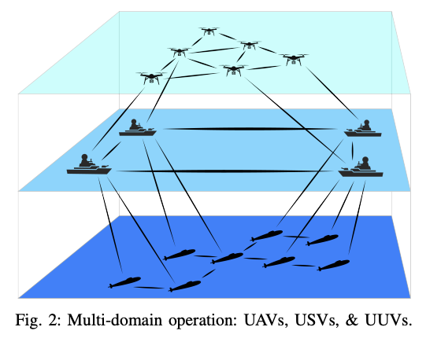
17
Thank You!
Covered today
- A framework for agent-based models
- Agent-based programs / workflows
- Incremental search
- CatColab (try it out at catcolab.org)
Compositionality
- Database compositionality (\([\mathsf{C},\mathsf{Set}]\), data migrations)
- Compositional wiring diagram syntax for workflows
- CatColab allows integrating heterogeneous models
WITH
Nate Osgood
James Fairbanks
Evan Patterson
Michael Arntzenius
18